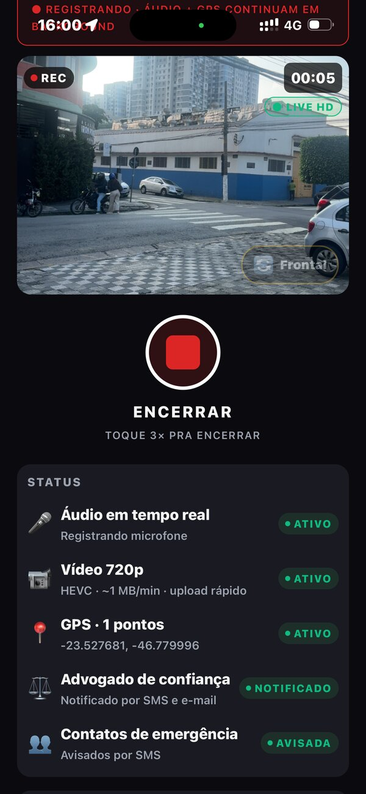

O SOSC JUS avisa antes que vire um problema. Descubra processos que você nem sabia que existiam, consulte mandado de prisão na hora, e tenha seus advogados e contatos de confiança a um toque de distância.
Toque em qualquer ferramenta abaixo pra ver ela funcionando de verdade — são telas reais do app, não desenhos.
Numa situação de risco, não dá tempo de pensar. O SOSC JUS foi feito pra funcionar sem você precisar decidir nada.
Áudio, vídeo e localização começam a ser registrados na hora — sem precisar abrir mais nada.
O advogado de confiança vinculado recebe o aviso na hora e pode acompanhar o áudio e o GPS em tempo real, de onde estiver.
Áudio, vídeo, GPS e relatório final ficam registrados com hash e carimbo de tempo — verificável, seguindo a cadeia de custódia.
Seu advogado já pode agir — sair de casa pra te encontrar, ou começar a trabalhar com a prova em mãos, sem precisar do seu celular.


Uma filmagem qualquer, num celular qualquer, não vale como prova técnica. O que o SOSC JUS gera segue o mesmo padrão que perícia digital usa.
Cada prova recebe uma impressão digital única — qualquer alteração, por menor que seja, é detectável.
Assinatura digital com validade jurídica, no padrão oficial da Infraestrutura de Chaves Públicas Brasileira.
Carimbo de tempo padrão internacional — prova exatamente quando cada registro foi feito.
Criptografia de nível militar em cada arquivo, do momento do registro até o armazenamento.
Cada etapa — captura, envio, armazenamento — é registrada e rastreável, do jeito que a perícia exige.
Armazenamento redundante, acessível de qualquer lugar, sempre protegido.
Disponível pra iPhone e Android. Cadastro rápido, sem burocracia.
Na primeira abertura, o app já busca o que existe no seu nome.
Prazo, audiência ou mandado novo — a notificação chega antes de virar surpresa.